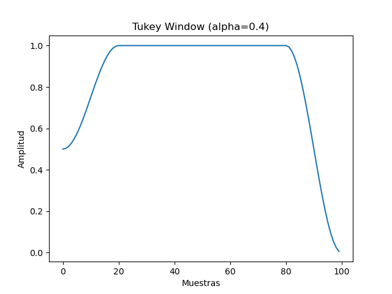

Note
Go to the end to download the full example code
Tukey Filter - 2D Fault
Generate a Tukey window
- return:
[description]
- rtype:
[type]
import numpy as np
import matplotlib.pyplot as plt
def tukey_window(N, alpha=0.5):
"""
Genera una ventana Tukey.
Parámetros:
- N: Longitud de la ventana.
- alpha: Parámetro de apertura (0 para una ventana rectangular, 1 para una ventana Hann).
Retorna:
- Ventana Tukey.
"""
if alpha <= 0:
return np.ones(N)
elif alpha >= 1:
return np.hanning(N)
else:
x = np.linspace(0, 1, N, endpoint=False)
w = np.ones_like(x)
# Aplica la parte de la ventana Hann
first_condition = x < alpha / 2
last_condition = x >= 1 - alpha / 2
w[first_condition] = 0.5 * (1 + np.cos(2 * np.pi / alpha * (x[first_condition] - alpha / 2)))
w[last_condition] = 0.5 * (1 + np.cos(2 * np.pi / alpha * (x[last_condition] - 1 + alpha / 2)))
# Ajusta los valores para que no alcancen completamente cero al comienzo y al final
w[first_condition] = 0.5 + 0.5 * w[first_condition]
w[last_condition] = 0 + 1 * w[last_condition]
return w
# Ejemplo de uso
N = 100
alpha = 0.4
tukey = tukey_window(N, alpha)
# Visualización de la ventana Tukey
plt.plot(tukey)
plt.title(f'Tukey Window (alpha={alpha})')
plt.xlabel('Muestras')
plt.ylabel('Amplitud')
plt.show()
Total running time of the script: (0 minutes 0.064 seconds)